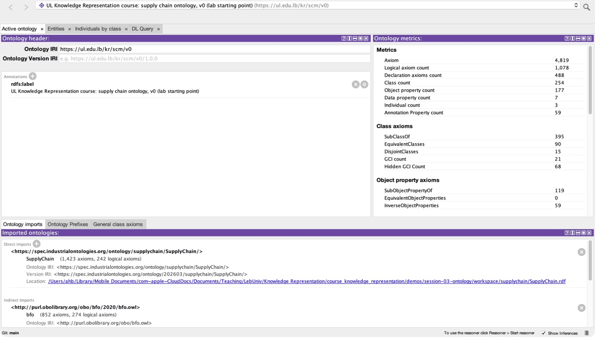
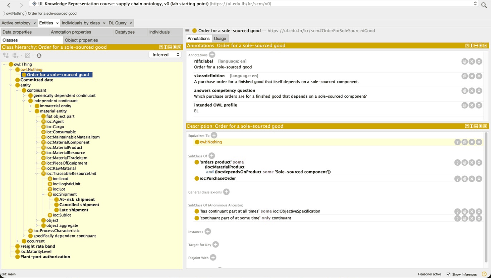
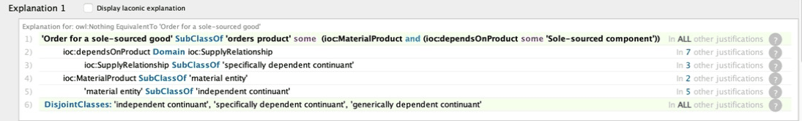
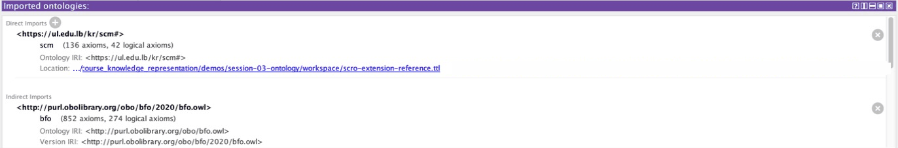
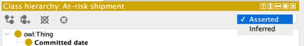

Today you write down what our supply chain words mean, in a form a machine can reason with. Then a reasoner finds a real mistake in our own ontology, and you fix it.
This session runs long on purpose (about 230 minutes, agreed with the instructor on 2026-09-22): it carries the ontology the rest of the course builds on.
python fetch_ontologies.py once in demos/session-03-ontology/. If not, they do it during Part 1; the lab needs it.The 9,215 Brunel orders as a graph you can query (Session 2), and a list of business rules found in the data (Session 1).
Nothing tells a machine what late, carrier or at risk mean. Every system still guesses.
Three minutes. Point at stage 04: this is where the course stops storing data and starts describing what it means.
By the end you can read and write the rules of an ontology, run a reasoner, understand what it reports, and fix a real mistake it finds in our own supply chain ontology.
Protégé 5.6 · the folder demos/session-03-ontology/ · its workspace/, created by python fetch_ontologies.py.
Name the payoff early: in the lab the reasoner turns one of our classes red, and before the end of the session everyone knows exactly why and has seen it fixed.
The disagreement is not in the data. It is in the word.
Ten seconds. Read the question, let it hang, move on.
Real shipping days greater than the scheduled days.
The dataset's own column Delivery Status says “Late delivery”.
Real shipping days more than one day over schedule.
Every number is correct. A dashboard, a model and a report can each pick a different one, and nobody notices.
Write the meaning down once, precisely, in a form every program reads the same way.
Four minutes. All three numbers were computed on 2026-09-22 from the real file demos/data/dataco/DataCoSupplyChainDataset.csv: 65,752 distinct orders; 37,698 with real days > scheduled (57.3%); 36,048 labelled "Late delivery" (54.8%); 15,578 more than one day late (23.7%).
Five minutes. Walk the picture in plain words: "this shipment is a shipment; it is handled by carrier V444_1; V444_1 is a sanctioned carrier; every sanctioned carrier is a carrier".
sample-shipments.ttl holds exactly these individuals.A fact stated about Shipment is automatically true of every late, cancelled and at-risk shipment. You write it once.
Four minutes. Protégé draws the same tree; students see it in the lab. Read two lines aloud as sentences: "every late shipment is a shipment", "every sanctioned carrier is a carrier". Then the inheritance point in the callout: that is the whole reason for a tree.
All six of our classes are real classes in scro-extension-reference.ttl; Shipment and Carrier come from IOF SCRO.
Four minutes. The practical reason this matters: in Protégé, object and datatype properties live in two different tabs, and a value cannot be the start of another arrow.
ul:weight). Session 1 met the same order in the rate band gap.rdfs:label, skos:definition, and the course's own ul:answersCQ.You can change the rules without touching the data, and load new data without touching the rules. The lab keeps them in two files.
Four minutes. T is for terminology, A is for assertions: say it once, it helps them remember.
Which of these is an ABox axiom, a fact about particular things?
Three minutes. If anyone picks c, that is the most useful wrong answer: it is about a property, not a particular thing, so it is a rule.
With a handful of words: some, only, and, or, not, exactly. Protégé shows them on every screen.
Ten seconds. Read the question, let it hang, move on.
Circle = class · dot = individual · a circle inside a circle = a subclass.
Four minutes. "Every at-risk shipment is a shipment" just says one circle sits inside the other; the next slides add rules the same way.
The shipments of orders 1447291369.7 and 1447311670.7 are drawn inside At-risk shipment already. In the lab the reasoner puts them there, because of the rule on the slide "SubClassOf and EquivalentTo". Say: hold that thought.
some means: at least one arrow of this kind lands in that circle| English | at least one carrier of this shipment is sanctioned |
| Protégé | 'handled by' some 'Sanctioned carrier' |
| Turtle | owl:someValuesFrom ul:SanctionedCarrier |
Five minutes. Read the Protégé line aloud slowly, it is exactly what they will see in the Description panel in the lab: 'handled by' some 'Sanctioned carrier'. The quotes appear because the names contain spaces.
only means: no arrow of this kind lands outside that circleA shipment with no carrier recorded still passes. only never says an arrow exists. To say both, write some and only.
| English | every carrier of this shipment, if any, is sanctioned |
| Protégé | 'handled by' only 'Sanctioned carrier' |
| Turtle | owl:allValuesFrom ul:SanctionedCarrier |
Four minutes. Ask the room first: does the shipment with no carrier satisfy it? Most say no. The answer is yes, nothing breaks the rule. This is the single most common OWL misreading, and Part B of the lab asks them to write some plus only correctly.
Every Brunel order has a carrier, so the third dot is a hypothetical shipment, not a row from the data. Say so.
Members of both classes.
Shipment and ('handled by' some 'Sanctioned carrier')
Members of either class.
Plant or Port
Everything outside the class.
Carrier and not 'Sanctioned carrier'
Classes that share no member.
'Late shipment' DisjointWith 'Cancelled shipment'
Every example is written the way Protégé shows it. The disjoint one is a real axiom in our lab file.
Five minutes. Disjointness is the one that makes errors findable: if one individual lands in both circles, the reasoner reports a contradiction instead of silently accepting it. The lab's bug is found by a disjointness axiom in BFO.
V444_0 ships on 2 lanes, V44_3 on 3, V444_1 on 1. Two of the three carriers would count as multi-route.
The fast reasoner used first in the lab, ELK, ignores counting rules. That is why it misses one of the lab's two errors.
Four minutes. Both classes are real in scro-extension-reference.ttl: ul:SoleSourcedComponent ('supplied by' exactly 1 Supplier) and ul:MultiRouteCarrier ('handles route' min 2 'Shipping route').
INSERT INTO handled_by
VALUES ('1447311670.7', 'V444_1');
IntegrityError: FOREIGN KEY constraint failedFive minutes. Left, the database: the shipment is not in the shipment table, so the row is refused. Right, OWL: nothing is refused, the reasoner concludes a type. Both sides are real. The database error: demos/session-03-ontology/closed_world_demo.py (output in reference-outputs/closed-world-demo.txt). The OWL side is the lab file sample-shipments.ttl, reasoned with ELK in the lab.
handled by: domain Shipment, range Carrier.| Real reasoner result (ELK) | 1447385217.7 · V444_0 | 1447291369.7 · V444_1 | 1447311670.7 · V444_1 |
|---|---|---|---|
| At-risk as SubClassOf | no | no | no |
| At-risk as EquivalentTo | no | at risk | at risk |
Six minutes. This is the slide that answers "what did the reasoner add?". With a primitive class, nothing: no shipment is ever placed in it. With a defined class, the reasoner does the classifying.
python realize_sample.py runs ROBOT on sample-shipments.ttl twice, once as shipped (EquivalentTo) and once with that one axiom turned into SubClassOf; output in reference-outputs/realized-sample.txt.If A is part of B and B is part of C, then A is part of C.
At most one value per subject: one order date per order.
The same link read backwards: handled by and handles.
Using one name as both a class and an individual. OWL 2 allows it, but it confuses people and tools. Avoid it unless you truly need it.
Four minutes. Our file declares ul:deliveredAfter as the inverse of ul:committedBefore, a real example. Transitivity is how "which products contain a part from this plant" works at any depth (Session 1's sanction question); Brunel has no parts list, so the bolt and wheel are a generic picture, not course data.
The functional card: order 1447291369.7 really was ordered on 2013-05-26; the second date is what a careless second source might send. Two different literal values make the ontology inconsistent. If the two values were individuals, OWL would instead conclude they are the same thing, the open world again.
Fill in the blanks
Three minutes. Blank 3 is the one that matters for the lab.
Nobody, by hand. A reasoner does, in seconds, and tells you exactly which axioms are to blame.
Ten seconds. Read the question, let it hang, move on.

scro-extension-v0.ttl, Active ontology tab. Right: the metrics. Bottom: what it imports.Reasoner: a program that works out every fact that follows from an ontology's axioms.
Inference: a fact the reasoner derived that nobody wrote down.
The reasoner never assumes a missing fact is false. No carrier recorded means unknown, not none.
Four minutes. Our own file is small (about 40 of our classes and properties); the 4,819 come from what it imports. Nobody reads that by hand, and a single wrong axiom anywhere can change the meaning of ours.
Can this ontology have any model at all? One thing in two disjoint classes: no.
Compute the full tree, including subclass links nobody wrote.
For every individual, compute every class it belongs to.
Five minutes. Walk the three cards left to right. The middle one is real: At-risk shipment is defined as "Shipment and handled by some Sanctioned carrier", so the reasoner concludes it is a subclass of Shipment although nobody wrote that line. The right one is the lab's realization result (reference-outputs/realized-sample.txt).

scro-extension-v0.ttl. Order for a sole-sourced good is red.Satisfiable class: a class that could have at least one member without contradiction.
Unsatisfiable class: a class that can never have a member. Protégé shows it red.
owl:Nothing: the empty class. An unsatisfiable class is equivalent to it.
Nothing failed. The reasoner proved that our own definition asks for something impossible. The lab finds out why.
Four minutes. This is the moment of the lab, shown now so nobody panics when it happens on their screen. ELK finds one red class in v0; HermiT finds two (Part 5 explains why).
python local_reasoner.py workspace/domain-mistake.ttl answers: the ontology is inconsistent.
A domain is a promise about every subject. Attach the property to the wrong kind of thing and the reasoner believes you, all the way to a contradiction.
Five minutes. Step through with the arrow keys; ask the room at step 2 what they expect before showing step 3.
demos/session-03-ontology/domain-mistake.ttl (reference-outputs/domain-mistake.txt). po88 is a purchase order from the Session 5 ERP seed data.
Line 1 is the only line we wrote. Lines 2 to 6 were imported. So the mistake is in how line 1 uses SCRO. Part 4 decodes lines 2 to 6.
Five minutes. Read the six lines aloud, but do not explain the BFO words yet: they are Part 4. The point now is the method: find the line that is ours.
explain finds a different justification for the same class (reference-outputs/explain_v0_ELK.md): there can be more than one. Any single one is enough to fix.After the reasoner runs, Late shipment appears under At-risk shipment, which nobody intended. Which job surfaced it?
Three minutes. The scenario is hypothetical (it does not happen in our file): read the inferred tree as a claim about what you said. When it disagrees with what you meant, the model is wrong, not the reasoner.
Not reusing them is a decision, not a default. And reusing them has a price: you inherit their rules.
Ten seconds. Read the question, let it hang, move on.
Upper ontology: a very general ontology of basic categories that domain ontologies build on. BFO is an ISO standard one.
IOF · SCRO: the Industrial Ontologies Foundry's core layer, and its Supply Chain Reference Ontology, the base we extend.
Alignment: linking our classes to classes in another ontology.
Four minutes. Build the stack from the bottom in words: BFO says what kinds of thing exist at all; IOF Core adds industry; SCRO adds supply chain; we add only what our competency questions need.
workspace/ (IOF release 202603, MIT licence).Four minutes. The test to give students: can you ask "how long did it take?" If yes, occurrent. Can you ask "where is it now?" If yes, continuant.
Independent continuant: exists on its own; a material entity is made of matter.
Specifically dependent continuant: exists only in one bearer: a quality, a role.
Generically dependent continuant: information that can be copied between bearers.
Five minutes. The one rule that matters for the lab: BFO says these three kinds share no member. A physical thing is never a role, and never a document. Remember this for the next slide.
Do not reuse a property for its name. Use our own, ul:hasComponent and ul:suppliedBy, which say exactly what we mean. The reference file does; the lab applies it.
Six minutes, the most important slide of Part 4. Step through slowly; at step 5 ask the room why the product cannot be both, and let them use the previous slide.
reference-outputs/explain_v0_ELK.md).Put the method in the order you will actually work in.
Every class carries the question it answers, as a ul:answersCQ note. Eight questions, listed in competency_questions.md.
Five minutes. Let them argue about whether the search comes before or after writing the questions. It comes after: you cannot judge whether SCRO covers you until you know what you are asking.
The rule that decides scope: a class earns its place by answering a question the organisation actually asks. If you cannot name the question, delete the class.
Someone adds a class ul:DTPShipment for Brunel's Service Level column. Keep it?
Forty five seconds, then reveal and tally with the plus buttons. Spend the rest on whoever picked a: the schema first instinct this course exists to dislodge.
Session 1 found that CRF orders are exactly the V44_3 orders and have no freight rate: that is a question worth asking, and it could earn a class. Ask the room to name the question first.
owl:sameAs: two names for exactly the same individual. The reasoner merges everything said about them.
owl:equivalentClass: two classes with exactly the same members. Every rule on one applies to the other.
Prefer rdfs:subClassOf until you can defend the equivalence. Keep “probably the same” for Session 5's entity resolution, with a confidence.
Four minutes. sameAs is routinely misused for "these records probably refer to the same carrier". That is a similarity claim, and it belongs in Session 5 with a reported confidence, not as a logical identity the reasoner propagates everywhere.
equivalentClass imports every axiom on the other side, which is exactly how the reuse trap on the previous slides happened, one level down.
How much of OWL you use. Less OWL, faster answers, and some questions you can no longer ask.
Ten seconds. Read the question, let it hang, move on.
| Profile | Built for | Gives up | Reasoner |
|---|---|---|---|
| EL | Very large class trees | only, counting, not | ELK, fast |
| QL | Queries over a relational database | several constructs, to rewrite into SQL | Ontop, Session 5 |
| RL | Rule engines | reasoning about unnamed things | rule engines |
| DL | Everything OWL can say | nothing, but can be slow | HermiT, complete |
OWL profile: a restricted part of OWL chosen so reasoning stays fast.
Decidable: a program is guaranteed to finish with the right answer. OWL DL is; full first order logic is not.
ELK · HermiT: a very fast EL reasoner that ignores the rest; a complete, slower DL reasoner.
Five minutes. The engineering point: the profile is a decision you make and record, not something you discover when the reasoner never returns. QL matters again in Session 5, where Ontop rewrites SPARQL into SQL.
| Reasoner | Impossible classes in v0 |
|---|---|
| ELK | Order for a sole-sourced good |
| HermiT | Order for a sole-sourced good Sole-sourced component |
A fast reasoner that says “no errors” only means no errors it can see. Run the complete one before you ship.
Four minutes. Real runs: ROBOT 1.9.10 with each reasoner on scro-extension-v0.ttl (reference-outputs/explain_v0_ELK.md, explain_v0_HermiT.md), and the same two classes again from python local_reasoner.py workspace/scro-extension-v0.ttl (HermiT, 13 seconds).
ul:suppliedBy.Fill in the blanks
Three minutes. Ninety seconds to type, then check as a room.
Then watch the fixed file classify real shipments, and write three axioms of your own.
Ten seconds. Read the question, let it hang, move on.
scro-extension-v0.ttl, run ELK, find the red class, read why, run HermiT, see the fix, watch sample-shipments.ttl classify two shipments.my_axioms.ttl; check_my_axioms.py says right or not yet.The lab is for understanding. The README in demos/session-03-ontology/ says what to expect at each step and what to take to your project.
Do not debug in the room: python local_reasoner.py workspace/scro-extension-v0.ttl finds the same red classes from the terminal.
Three minutes, then walk the room. Most common blocker: opening the file from demos/session-03-ontology/ instead of workspace/, so the imports do not resolve (next slide, point 1). Second: python fetch_ontologies.py never run.

catalog-v001.xml.
Save your fixed version as a new file. v0 is the lab's starting point for everyone, including you next week.
Video series: Protégé fundamentals on YouTube, the Protégé videos in that playlist, also linked in the lab README.
Three minutes. Protégé is a complex GUI tool, so it gets a video plus this one slide (AGENTS.md 2c rule 5). Every capture is real, from the instructor's Protégé 5.6 on these files.
Red class found and explained. HermiT shows a second one. The fixed file has none. Two shipments of V444_1 classified as at risk.
python check_my_axioms.py says 3 of 3. Stuck? The hints name the missing word.
Answers to the three questions, one of them about your own team's data.
Your project ontology will reuse a published one too. Before you borrow a property, open its definition and check its domain and range.
Fifty five minutes. At minute 30, anyone still without a red class runs python local_reasoner.py workspace/scro-extension-v0.ttl and continues from the explanation.
someValuesFrom part, the only trap from Part 2. The checker names it.vocol/scor, on GitHub.scor.ttl.It is one reason this course builds on IOF SCRO (MIT licence), not SCORVoc. An ambiguous licence is itself the finding.
assets/img/s3-licence-conflict.png. Date the capture in the caption: this may be fixed upstream.Ten minutes, run as a whole-room pause. Do it live if the network holds. Check upstream before teaching: if the conflict has been resolved, the exercise still works but the caption must say so.
Say the full version: every third-party ontology, vocabulary and dataset in the team's final report must be listed with its licence. workspace/LICENCES.md records the licences for what this lab reuses.
ul:CancelledShipment answers no competency question. Keep it or delete it, and what question would earn it a place?Each team leaves knowing where its own classes will attach, and one property it must not borrow for its name alone.
Eight minutes. Question 3 is the one to spend time on: two or three teams answer it out loud. The usual weak answer puts a business event (a delivery, a payment) under a continuant.
One minute, or skip in class: it is for revision. The full list, with every BFO term, is in GLOSSARY.md.
A reasoner believes everything you write. That is exactly why it can show you what you did not mean.
Hogan et al., Chapter 4, Deductive Knowledge. Allemang, Hendler and Gandon: Basic OWL, Counting and sets in OWL. Bring the Session 1 business rules: next week each one becomes a SHACL shape.
Today OWL inferred rather than complained. Next week SHACL complains: closed world checks over the same graph.
Two minutes. End on the sentence. Milestone 1 is due at the end of Session 4.
Press S for study mode: every definition shows inline, every reveal opens, every diagram shows its last step.
O contents · / search · ? all shortcuts. Answers are stored in this browser only.
Close here so students know where the self study tools are. Six graded items is more than the score list fits at its usual spacing, so this slide tightens three spacing tokens for itself only.